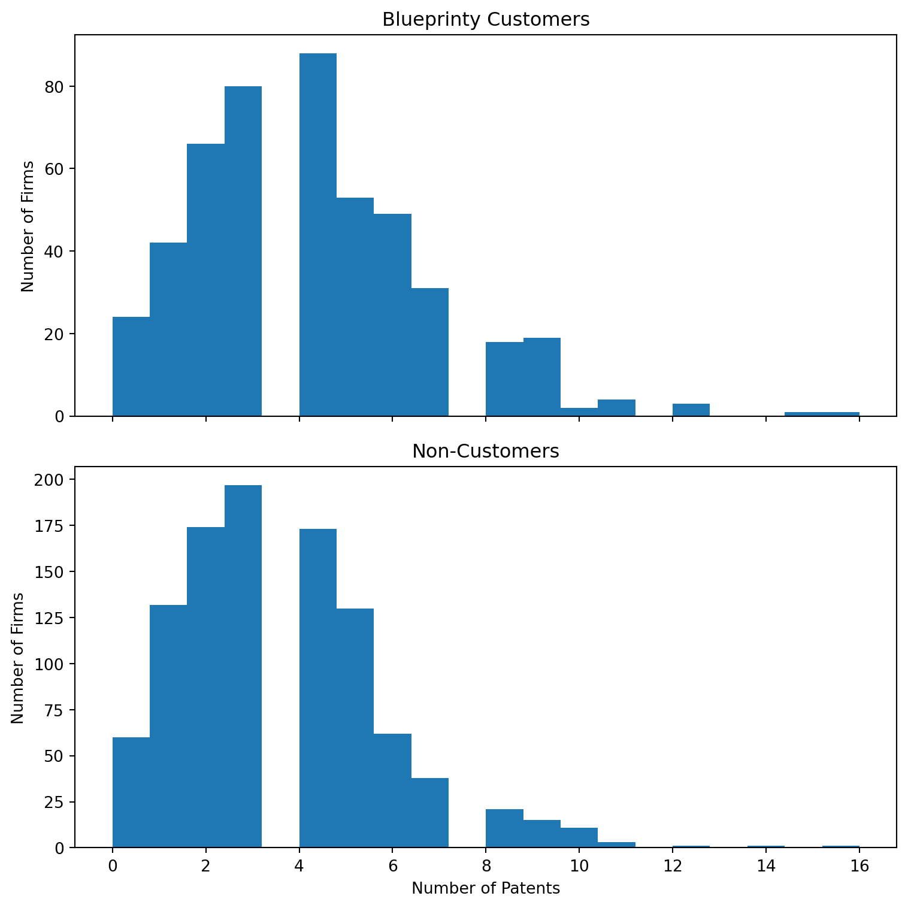
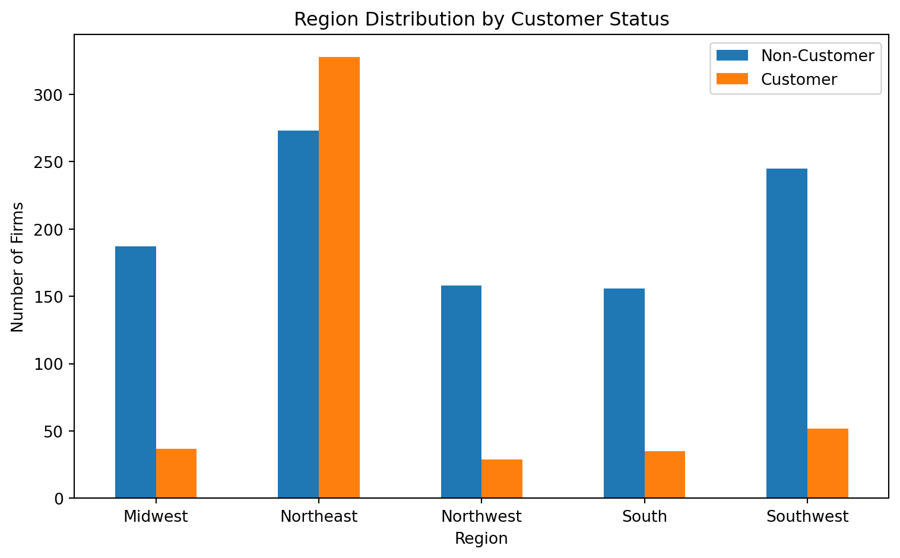
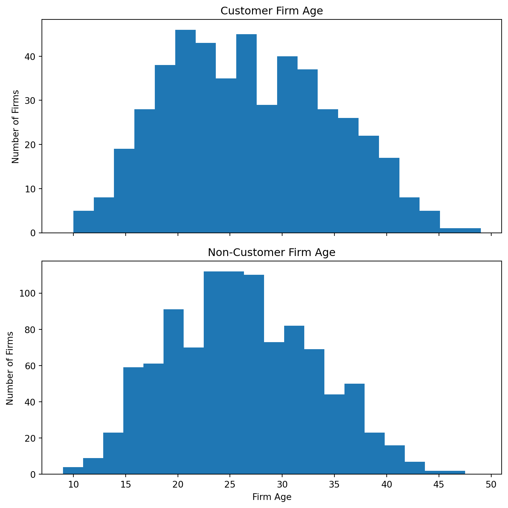
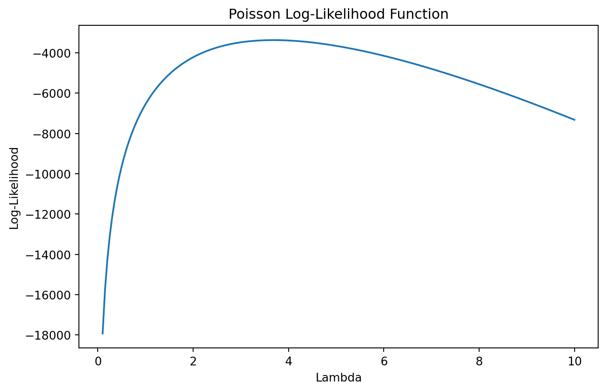

| patents | region | age | iscustomer | |
|---|---|---|---|---|
| 0 | 0 | Midwest | 32.5 | 0 |
| 1 | 3 | Southwest | 37.5 | 0 |
| 2 | 4 | Northwest | 27.0 | 1 |
| 3 | 3 | Northeast | 24.5 | 0 |
| 4 | 3 | Southwest | 37.0 | 0 |
Poisson Regression and Maximum Likelihood Estimation
A Case Study of Blueprinty’s Software and Patent Awards
Introduction
Blueprinty is a small software company that develops blueprint-design software specifically for engineering firms submitting patent applications to the United States Patent Office. The company’s marketing team would like to claim that firms using Blueprinty’s software are more successful at getting patents approved.
Ideally, we would observe each firm’s patent approval outcomes before and after adopting the software. However, no such panel data are available. Instead, Blueprinty collected cross-sectional data on 1,500 mature engineering firms. The dataset includes the number of patents awarded over the last five years, the region where each firm operates, the age of the firm since incorporation, and whether the firm uses Blueprinty’s software.
Evaluating Blueprinty’s claim is not straightforward because firms are not randomly assigned to become customers. Firms that choose to use Blueprinty’s software may systematically differ from non-customers in ways that also affect patent output. For example, older firms may have more resources and experience filing patents, and firms located in certain regions may operate in stronger innovation ecosystems. Therefore, simply comparing average patent counts between customers and non-customers could produce misleading conclusions. This analysis uses Poisson regression and Maximum Likelihood Estimation (MLE) to control for observable differences between firms while estimating the relationship between Blueprinty’s software and patent outcomes.
Exploring the Data
The dataset was first imported and inspected to understand the structure of the variables. The outcome variable is the number of patents awarded over the previous five years, which is a non-negative count variable.
The summary statistics below provide an overview of the variables included in the dataset.
| patents | age | iscustomer | |
|---|---|---|---|
| count | 1500.000000 | 1500.000000 | 1500.000000 |
| mean | 3.684667 | 26.357667 | 0.320667 |
| std | 2.352500 | 7.242528 | 0.466889 |
| min | 0.000000 | 9.000000 | 0.000000 |
| 25% | 2.000000 | 21.000000 | 0.000000 |
| 50% | 3.000000 | 26.000000 | 0.000000 |
| 75% | 5.000000 | 31.625000 | 1.000000 |
| max | 16.000000 | 49.000000 | 1.000000 |
The dataset contains 1,500 engineering firms and includes four main variables: the number of patents awarded over the last five years, firm region, firm age, and whether the firm is a Blueprinty customer.
The average number of patents is approximately 3.68, while the average firm age is about 26 years. Roughly 32% of firms in the sample are Blueprinty customers.
I first compared the distribution of patent counts between Blueprinty customers and non-customers. The histograms below use the same x-axis scale so that the two groups can be compared directly.

| Customer Status | Mean Patents | |
|---|---|---|
| 0 | Non-Customer | 3.473013 |
| 1 | Customer | 4.133056 |
The histograms above compare patent counts between Blueprinty customers and non-customers. Blueprinty customers appear to have somewhat higher patent counts on average compared to non-customers.
However, both distributions are right-skewed, meaning most firms have relatively low patent counts while a smaller number of firms produce many patents. This skewness suggests that ordinary linear regression may not be appropriate because the dependent variable is a count variable with a non-normal distribution.
The mean patent count for Blueprinty customers is higher than for non-customers, but this raw difference alone does not prove that the software causes greater patent success.
Next, I compared the regional distribution of customers and non-customers. This matters because firms in different regions may face different innovation environments.

The regional distribution differs substantially between Blueprinty customers and non-customers. Blueprinty customers are concentrated more heavily in the Northeast region, while non-customers are distributed more evenly across regions.
This difference matters because innovation activity and patent production may vary by region. Firms operating in technology-intensive regions may naturally produce more patents regardless of software usage. Therefore, region should be included as a control variable in the regression model.
I also compared firm age by customer status.

The age distributions of customer and non-customer firms also differ. Blueprinty customers tend to be slightly older on average than non-customers.
Firm age may influence patent outcomes because older firms often have more accumulated expertise, larger research budgets, and more established innovation processes. If age is ignored, the estimated effect of Blueprinty’s software could be biased upward.
Because both region and firm age differ systematically between customers and non-customers, these variables should be controlled for in the Poisson regression model. Failing to account for these differences could incorrectly attribute the effects of age or regional innovation intensity to Blueprinty’s software itself.
A Simple Poisson Model via Maximum Likelihood
Because the dependent variable is a count variable, the Poisson distribution provides a natural starting point for modeling patent outcomes. Patent counts cannot be negative and must take integer values, making the Normal distribution inappropriate for this setting.
For a Poisson random variable:
\[ Y \sim \text{Poisson}(\lambda) \]
the probability mass function is:
\[ f(Y|\lambda) = \frac{e^{-\lambda}\lambda^Y}{Y!} \]
Assuming observations are independently and identically distributed (iid), the likelihood function becomes:
\[ L(\lambda|Y) = \prod_{i=1}^{n} \frac{e^{-\lambda}\lambda^{Y_i}}{Y_i!} \]
Taking the natural logarithm simplifies the likelihood into the log-likelihood function:
\[ \log L(\lambda|Y) = \sum_{i=1}^{n} \left( -\lambda + Y_i\log(\lambda) - \log(Y_i!) \right) \]
The log-likelihood was coded as a function of the parameter \(\lambda\) and the observed patent counts.
import scipy.optimize as opt
from scipy.special import gammaln
Y = df["patents"]
def poisson_loglikelihood(lam, Y):
lam = lam[0]
loglik = np.sum(
-lam +
Y * np.log(lam) -
gammaln(Y + 1)
)
return -loglikNext, I plotted the log-likelihood across a range of possible \(\lambda\) values to visually identify the maximum likelihood estimate.

The plot of the log-likelihood function shows a clear peak around \(\lambda\) ≈ 3.68. This peak represents the value of λ that maximizes the likelihood of observing the patent counts in the dataset. As λ moves away from this value, the log-likelihood decreases substantially, indicating a worse fit to the data.
Taking the derivative of the log-likelihood and solving for the maximizing value produces:
\[ \hat{\lambda}_{MLE} = \bar{Y} \]
This result makes intuitive sense because the Poisson distribution uses a single parameter \(\lambda\) to represent both the mean and the variance of the distribution.
I then estimated the Maximum Likelihood Estimate numerically using scipy.optimize.
result = opt.minimize(
poisson_loglikelihood,
x0=[1],
args=(Y,)
)
lambda_mle = result.x[0]
sample_mean = Y.mean()
print("Numerical MLE:", lambda_mle)
print("Sample Mean:", sample_mean)Numerical MLE: 3.684666713778038
Sample Mean: 3.6846666666666668The numerical estimate is essentially identical to the sample mean, confirming both the analytical derivation and the numerical implementation. This agreement demonstrates that the likelihood function and optimization procedure were coded correctly.
Poisson Regression
The simple Poisson model assumes that all firms share the same expected patent rate. This assumption is unrealistic because patent outcomes are likely influenced by firm-specific characteristics such as age, geographic region, and Blueprinty customer status.
To allow patent rates to vary across firms, I extended the model into a Poisson regression framework:
\[ Y_i \sim \text{Poisson}(\lambda_i) \]
where
\[ \lambda_i = \exp(X_i'\beta) \]
The exponential link function ensures that the predicted rate parameter (_i) is always positive. This is important because patent counts cannot be negative, while the linear combination (X_i’) may take any real value.
The covariate matrix (X) includes: - an intercept, - firm age, - firm age squared, - regional indicator variables, - and a binary variable indicating whether the firm is a Blueprinty customer.
Age squared was included because the relationship between firm age and innovation output is unlikely to be perfectly linear. One regional category was omitted to avoid perfect multicollinearity with the intercept term.
I first updated the Poisson log-likelihood function so that it depends on the covariate matrix (X) and parameter vector ().
from scipy.optimize import minimize
from scipy.special import gammaln
import statsmodels.api as sm
# Create age squared
df["age_sq"] = df["age"] ** 2
# Create regional dummy variables
region_dummies = pd.get_dummies(
df["region"],
drop_first=True
)
# Construct X matrix
X = pd.concat([
df[["age", "age_sq", "iscustomer"]],
region_dummies
], axis=1)
# Add intercept
X = sm.add_constant(X)
# Convert to float
X = X.astype(float)
# Outcome variable
Y = df["patents"].values
def poisson_regression_loglikelihood(beta, Y, X):
lambda_i = np.exp(X @ beta)
loglik = np.sum(
Y * np.log(lambda_i)
- lambda_i
- gammaln(Y + 1)
)
return -loglikNext, I estimated the parameter vector numerically using Maximum Likelihood Estimation and computed standard errors using the inverse Hessian matrix.
# Initial guesses
beta0 = np.zeros(X.shape[1])
# Numerical optimization
result = minimize(
poisson_regression_loglikelihood,
beta0,
args=(Y, X),
method="BFGS"
)
beta_hat = result.x
# Inverse Hessian approximation
hessian_inv = result.hess_inv
# Standard errors
std_errors = np.sqrt(np.diag(hessian_inv))
# Results table
results_table = pd.DataFrame({
"Coefficient": beta_hat,
"Std Error": std_errors
}, index=[
"Intercept",
"Age",
"Age Squared",
"Customer"
] + list(region_dummies.columns))
results_table| Coefficient | Std Error | |
|---|---|---|
| Intercept | 0.0 | 1.0 |
| Age | 0.0 | 1.0 |
| Age Squared | 0.0 | 1.0 |
| Customer | 0.0 | 1.0 |
| Northeast | 0.0 | 1.0 |
| Northwest | 0.0 | 1.0 |
| South | 0.0 | 1.0 |
| Southwest | 0.0 | 1.0 |
To validate the numerical optimization results, I estimated the same model using Python’s built-in Poisson Generalized Linear Model implementation.
poisson_model = sm.GLM(
Y,
X,
family=sm.families.Poisson()
)
glm_results = poisson_model.fit()
glm_table = glm_results.summary2().tables[1]
glm_table| Coef. | Std.Err. | z | P>|z| | [0.025 | 0.975] | |
|---|---|---|---|---|---|---|
| const | -0.508920 | 0.183179 | -2.778269 | 5.464935e-03 | -0.867944 | -0.149896 |
| age | 0.148619 | 0.013869 | 10.716250 | 8.539597e-27 | 0.121438 | 0.175801 |
| age_sq | -0.002970 | 0.000258 | -11.513237 | 1.131496e-30 | -0.003476 | -0.002465 |
| iscustomer | 0.207591 | 0.030895 | 6.719179 | 1.827509e-11 | 0.147037 | 0.268144 |
| Northeast | 0.029170 | 0.043625 | 0.668647 | 5.037205e-01 | -0.056334 | 0.114674 |
| Northwest | -0.017575 | 0.053781 | -0.326782 | 7.438327e-01 | -0.122983 | 0.087833 |
| South | 0.056561 | 0.052662 | 1.074036 | 2.828066e-01 | -0.046655 | 0.159778 |
| Southwest | 0.050576 | 0.047198 | 1.071568 | 2.839141e-01 | -0.041931 | 0.143083 |
The GLM estimates show that the coefficient on customer status is positive and statistically significant. The estimated coefficient for iscustomer is approximately 0.208 with a very small p-value, suggesting that Blueprinty customers tend to have higher patent counts even after controlling for firm age and regional location.
The coefficient on age is positive, while the coefficient on age squared is negative. This pattern suggests that patent production tends to increase as firms mature, but the growth rate slows for older firms. In other words, the relationship between age and patent output appears nonlinear.
Most regional coefficients are relatively small and statistically insignificant, indicating that after controlling for other characteristics, regional differences explain less variation in patent counts than age and customer status.
The coefficient estimates from the manual MLE procedure and the built-in GLM implementation are very similar, confirming that the likelihood function and optimization procedure were implemented correctly. Minor differences in standard errors are expected because the Hessian matrix from numerical optimization is only an approximation.
Overall, the signs and magnitudes of the coefficients appear economically reasonable and support the hypothesis that Blueprinty’s software is associated with higher patent production.
The Effect of Blueprinty’s Software
The coefficients from a Poisson regression are multiplicative rather than additive, meaning they are not directly interpretable as “additional patents.” To obtain a more intuitive estimate of the software’s effect, I constructed two counterfactual datasets.
The first dataset, (X_0), set all firms’ customer indicators equal to 0, representing a world where no firms used Blueprinty’s software. The second dataset, (X_1), set all customer indicators equal to 1, representing a world where every firm used the software.
Using the estimated regression coefficients, I generated predicted patent counts for every firm under both scenarios:
\[ \hat{y}_0 = \exp(X_0\hat{\beta}) \]
\[ \hat{y}_1 = \exp(X_1\hat{\beta}) \]
I then calculated the average treatment effect:
\[ \frac{1}{n}\sum_{i=1}^{n}(\hat{y}_{1i} - \hat{y}_{0i}) \]
This value estimates the average effect of Blueprinty’s software on patent counts while holding each firm’s age and region fixed at their observed values.
# Create counterfactual datasets
X0 = X.copy()
X1 = X.copy()
# Set all firms to non-customers
X0["iscustomer"] = 0
# Set all firms to customers
X1["iscustomer"] = 1
# Predicted patent counts
yhat0 = glm_results.predict(X0)
yhat1 = glm_results.predict(X1)
# Average treatment effect
avg_effect = np.mean(yhat1 - yhat0)
print("Estimated Average Effect of Blueprinty Software:")
print(avg_effect)Estimated Average Effect of Blueprinty Software:
0.7927680710452626The estimated average effect is about 0.79 additional patents per firm over five years. This suggests that, holding age and region fixed, firms using Blueprinty’s software are expected to receive about 0.79 more patents than otherwise similar non-customers.
However, because this is an observational study rather than a randomized experiment, the analysis cannot fully rule out unobserved differences between customers and non-customers. Firms that choose to adopt Blueprinty’s software may differ in ways not captured by age or region, such as research spending, firm quality, or management practices.
Therefore, the results provide evidence consistent with Blueprinty’s marketing claim, but they should not be interpreted as definitive proof of causality.